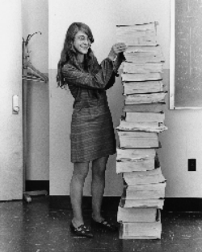

Born: 1815 ~ 1852
Ada Lovelace was the first computer programmer.
She also published the first algorithm carried out by Charles Babbage's proposed mechanical general-purpose computer, the Analytical Engine
Born: 1906 ~ 1992
Grace Brewster Murray Hopper is one of the first programmers of the Harvard Mark I computer.
She invented one of the first compiler related tools and machine-independent programming languages (early high-level programming language still in today's).
Born: 1949 ~ 2003
Anita Borg founded the Institute for Women and Technology and the Grace Hopper Celebration of Women in Computing.
Her goal was to have 50% representation for women in computing by 2020.

Born: 1936 ~ Present
Margaret Heafield Hamilton was a director of the Software Engineering Division of the MIT Instrumentation Laboratory,
which developed on-board flight software for the Apollo space program.
She inveted the term of "Software Engineering".